Anthony Hlebania
Fernando Astolfo Dos Santos
Fernando Hiroaki Suzuki - RA: 11202130281
Leonardo Di Credico - RA: 11202130507
Magic: The Gathering (MTG) é um jogo de cartas colecionáveis lançado em 1993 pela Wizards of the Coast. O objetivo do jogo é derrotar o oponente reduzindo sua vida a zero ou por meio de condições de vitória específicas. Nele, cada jogador constrói seu próprio baralho antes do jogo, escolhendo entre milhares de cartas disponíveis, que representam criaturas, feitiços, terrenos e outros tipos de cartas existentes no jogo.
Além da forma física, o Magic: The Gathering também possui uma forma de jogo online chamada "Magic Arena" e uma forma online de jogar com as cartas físicas através de um site da própria Wizards of the Coast chamado de "Spelltable". Nessa versão, os jogadores usam seus decks físicos para jogar contra oponentes de todo o mundo através da internet. O "Spelltable" oferece uma experiência de jogo que visa se aproximar à versão física, fazendo com que os jogadores tenham diversos formatos para serem jogados.
Para a identificação das cartas no "Spelltable", os jogadores utilizam um sistema de stream que envia imagens de seus tabuleiros em tempo real para o site onde os outros jogadores podem ver todas as cartas em suas respectivas mesas tornando possível a simulação do jogo físico, fornecendo uma prova visual das ações tomadas durante a partida. Essa medida é adotada para garantir a integridade do jogo e evitar trapaças, além de aumentar a imersão no jogo.
Embora o uso de câmeras para identificar as cartas no "Spelltable" seja uma solução prática, como em qualquer programa, pode haver problemas ocasionais e bugs. O bug mais preocupante é o que impede o sistema de ler quais cartas estão na mesa, pois geralmente a qualidade da imagem nem sempreé das melhores então o recurso de scanear a carta facilita a vida dos jogadores. Isso pode ser frustrante para os jogadores, pois pode resultar em jogadas erradas por falta de conhecimento das cartas em campo.
Diante disso, o projeto do Grupo Crakehall Boars consiste em desenvolver um programa que consiga replicar a identificação de cartas que o já consolidado site "Spelltable" realiza nas partidas de Magic: The Gathering.
Com relação aos objetivos, nosso projeto tem como um deles, a criação desse programa que consiga realizar a identificação das cartas de Magic utilizadas nas partidas online. Mas além disso, o objetivo principal é utilizar os conceitos vistos na disciplina de Processamento de Vídeo para o desenvolvimento de um projeto que possa atender demandas reais do nosso cotidiano.
| Diretório | Arquivo | Descrição | |
|---|---|---|---|
| src | src | src | src |
| Centro comercial Moctezuma | Francisco Chang | Mexico |
Com relação ao Teste de Campo, os usuários foram convidados a testar o programa desenvolvido pelo grupo. Para isso, deixamos a estrutura de apoio da webcam montada e as instruções com o passo a passo para que o usuário, mesmo que leigo, conseguisse abrir o programa e testá-lo. O usuário utilizava o programa até que estivesse satisfeito com os testes.
Após a etapa de teste do programa, o usuário era convidado a responder dois questionários, um deles era o Questionário Avaliativo (AQA), que tinha como objetivo, avaliar o usuário, verificando se o mesmo tinha entendido a proposta do programa e suas funcionalidades. O outro questionário tinha como objetivo o forncecimento de feedback dos usuários com relação ao programa, perguntando como foi a experiência do usuário e que tipo de alterações eram interessantes para a melhora do programa.
Instruções e QuestionáriosNo Questionário Avaliativo, utilizamos critérios de avaliação que abrangem aspectos como usabilidade, funcionalidade e impacto na jogabilidade. Abaixo, explicamos detalhadamente os critérios utilizados nesta avaliação:
1. Objetivo Principal: Avalia se o usuário entende claramente qual é o objetivo fundamental do programa de reconhecimento de cartas no contexto do jogo Magic: The Gathering. Isso abrange sua compreensão sobre como o programa melhora a jogabilidade e a interação entre os jogadores.
2. Benefícios do Reconhecimento Automático: Verifica se o usuário compreende os benefícios práticos de usar o programa para identificar automaticamente as cartas no tabuleiro, em comparação com a identificação manual. Isso envolve sua percepção sobre como o programa pode agilizar e enriquecer sua experiência de jogo.
3. Contribuição para a Imersão: Avalia se o usuário entende como o programa de reconhecimento de cartas contribui para uma experiência mais imersiva, semelhante à versão física do jogo. Isso inclui sua compreensão sobre como o programa simula a disposição das cartas e ações durante a partida.
4. Evitando Trapaças e Erros: Verifica se o usuário reconhece a importância do programa na garantia da integridade do jogo e na prevenção de trapaças. Isso abrange sua percepção sobre como o programa cria uma representação visual confiável das ações dos jogadores.
5. Simplicidade de Uso: Avalia se o usuário entende a facilidade de uso do programa e como ele simplifica o processo de identificação de cartas, eliminando a necessidade de comunicação verbal detalhada entre os jogadores.
6. Compatibilidade com a Experiência Física: Verifica se o usuário compreende como o programa busca replicar a experiência física do jogo, permitindo que você utilize seu baralho real durante as partidas online.
7. Conhecimento técnico de Processamento de Vídeo: Avalia se o usuário entende a parte téorica por trás do funcionamento do programa.
Ao avaliar cada um desses critérios, pretendemos entender o quão bem o usuário captou a proposta e os benefícios do programa de reconhecimento de cartas em Magic: The Gathering. A sua visão é fundamental para o aprimoramento contínuo do programa e sua contribuição é altamente valorizada.
Resultados do AQA:
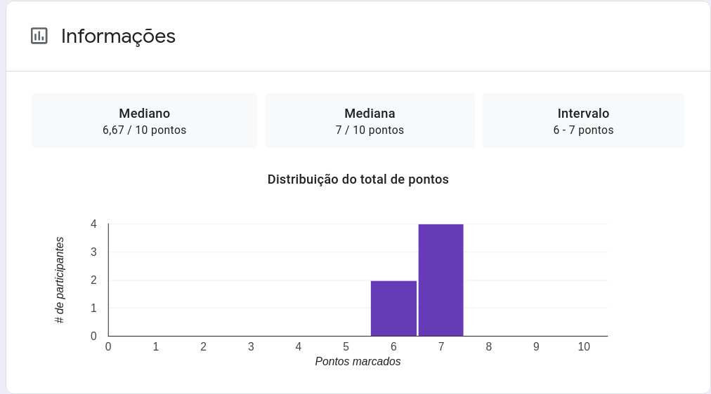 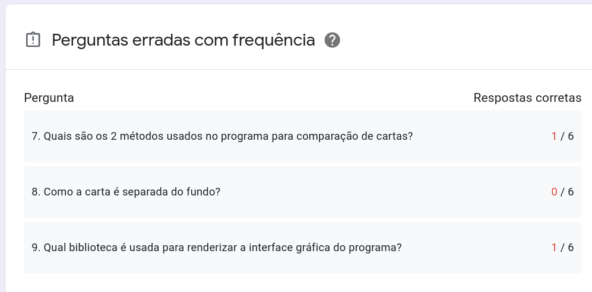 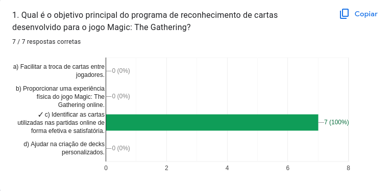 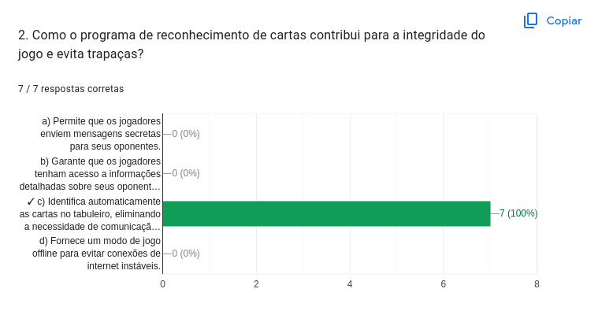 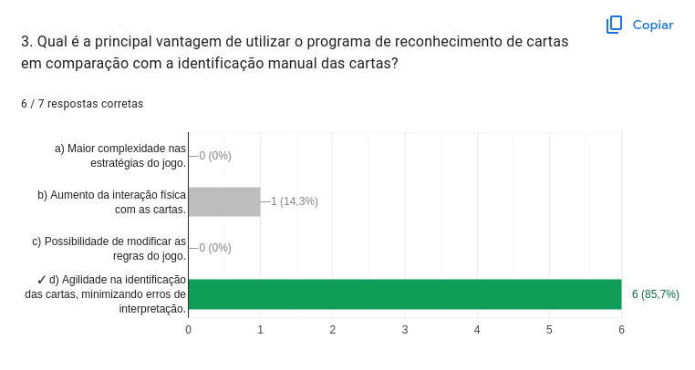 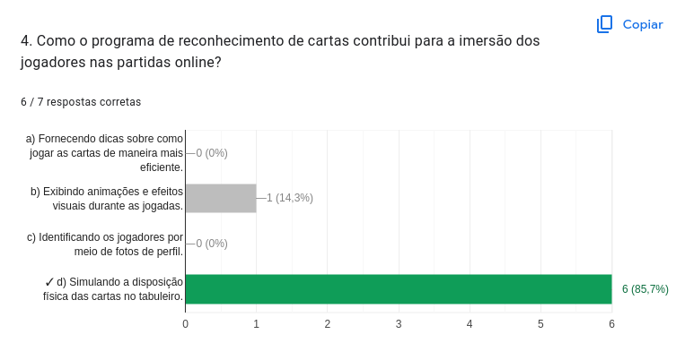 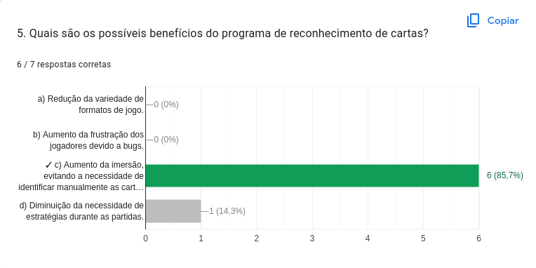 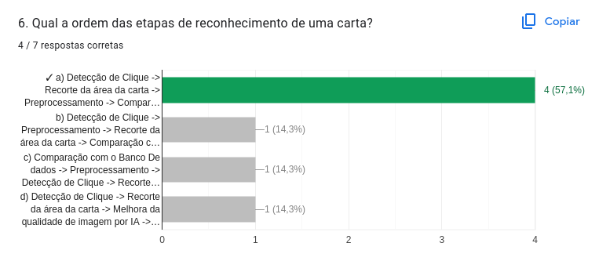 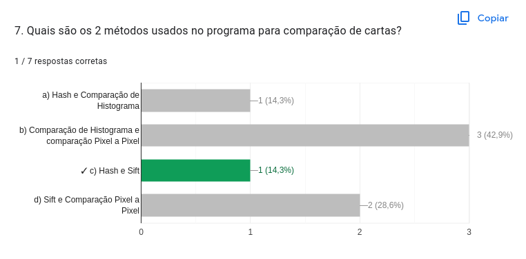 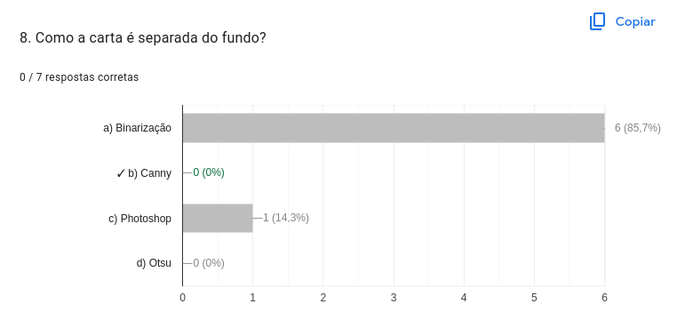 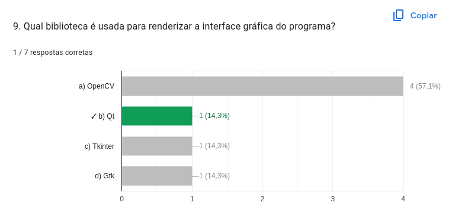